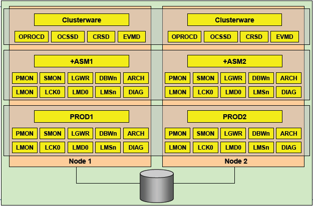

一、RAC后台进程
1. LMON
LMON:LOCK Monitor Processes 也被称为Global enqueue service monitor
- 监控整个集群状况，维护GCS的内存结构
- 监控非正常终止的进程和实例
- 当实例离开和加入集群时，锁和资源的重新配置
- 管理全局的锁和资源
- 监控全局的锁资源、处理死锁和阻塞
2. LMSn:Lock Monitor Services
也称作GCS（Global Cache Services）processes LMS进程主要用来管理集群内数据库的访问，并在不同实例的buffer cache中传输块镜像，当在某个数据块上
发生一致性读时，LMS负责回滚该数据块，并将它copy到请求的实例上 每个RAC节点至少有2个LMS进程
3. LCK:Lock Process
LCK进程主要用来管理实例间资源请求和跨实例调用操作，调用操作包括数据字典等对像访问，并处理非
CACEH FUSION的CHACE资源请求，（例如dictionary cache或row cache的请求） 由于LMS进程负责主要的锁管理功能，所以每个实例只有一个LCK进程
4. LMD:Lock Monitor Deamon Process
LMD进程主要管理对全局队列和资源的访问，并更新相应队列状态，处理来自于其它实例的资源请，每一个全局队列的当前状态存储在相应的实例共享内存中，该状态表明该实例具有相应的权利使用该资源，一个实例master的共享内存中存在一个特殊的队列，该队列记录来自其它远程实例的资源请求，当远程实例的LMD进程发出一个资源请求时，该请求指向master实例的LMD，当master实例的LMD进程受到该请求后，在共享内存中的特殊队列中监测该资源是否有无效，如果有效LMD进程更新该资源对列的状态，并通知请求资源的LMD进程该资源队列可以使用了，如果资源队列正被其它实例使用或当前无效，则LMD进程通知正在使用中的实例的LMD进程应用释放该资源，等资源释放变得有效时，master实例的LMD进程更新该资源队列的状态，并通知请求资源实例的LMD进程，该资源队列可以使用了
5. DIAG:Diagnostic Deamon
oracle10g新的后台进程 例行对实例的健康情况进行监控，同时也监控实例是否挂起或者出现死锁 收集实例和进程出错时的关键诊断信息 这个进程会更新alert日志文件，写入一些重要告警信息
二、RAC服务进程
1. CRS-集群资源服务(cluster ready services)
- 管理集群内高可用操作的基本程序
- CRS管理的任何事务被称之为资源
- 数据库、实例、监听、虚拟IP、应用进程等等
- CRS是跟据存储于OCR中的资源配置信息来管理这些资源
- 当一资源的状态改变时，CRS进程生成一个事件
2. CSS-集群同步服务(Cluster Synchronization Service)
- 管理集群节点的成员资格
- 控制哪 个结点为集群的成员、节点在加入或离开集群时通知集群成员来控制集群配置信息
- 此进程发生故障导致集群重启
3. EVMD事件管理服务(Event Management)
- 事件管理守护进程
- 发布CRS创建事件的后台进程
4. ONS-事件的发布及订阅服务(Oracle Notification Service)
- 通信的快速应用通知事件的发布及订阅服务
5. OCR- Oracle Cluster Register
- 集群注册文件，记录每个节点的相关信息
- 保存RAC集群的各种资源信息
- 类似于windows注册表
- 存储于共享磁盘上，所有实例共享
- 默认有2个互备磁盘
6. Voting Disk 表决磁盘
- 仲裁机制用于仲裁多个节点向共享节点财时写的行为，避免发生冲突
- 存储于共享磁盘上，所有实例共享
- 用于确定各个实例的关系
- 当有节点失效时，通过voting disk来决定驱逐哪个实例
- 默认有3个互备磁盘